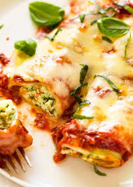

Spinach & Ricotta Cannelloni Recipe
Ingredients:
- 12 cannelloni tubes
- 250g ricotta cheese
- 200g fresh spinach, finely chopped
- 1 clove garlic, minced
- 50g parmesan cheese, grated
- Salt & black pepper to taste
- 1 egg, beaten
- 500ml tomato sauce
- 100g mozzarella cheese, shredded
- Fresh basil (for garnish)
Instructions:
- Preheat oven to 180°C (350°F).
- In a bowl, mix ricotta, spinach, garlic, parmesan, salt, and black pepper.
- Stir in beaten egg to bind the filling.
- Fill each cannelloni tube with the ricotta mixture.
- Spread half the tomato sauce in a baking dish and arrange filled cannelloni on top.
- Pour remaining tomato sauce over the cannelloni and top with shredded mozzarella.
- Bake for 30-35 minutes until golden and bubbly.
- Garnish with fresh basil and serve warm.